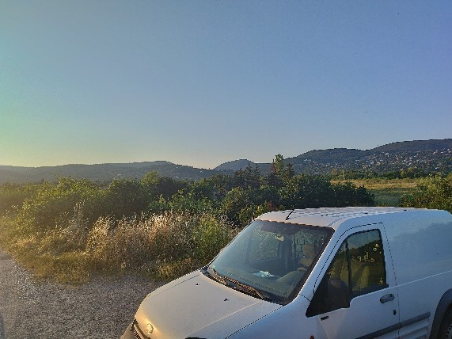
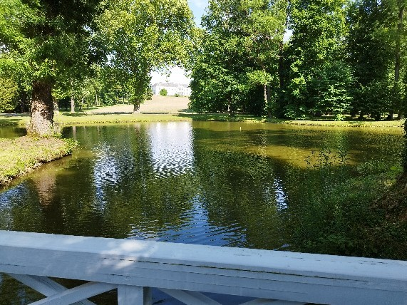
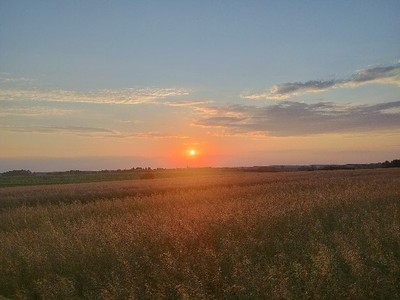
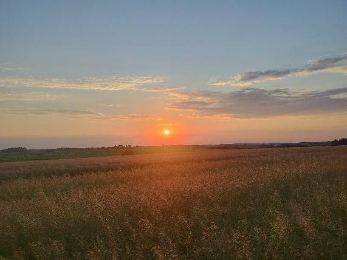
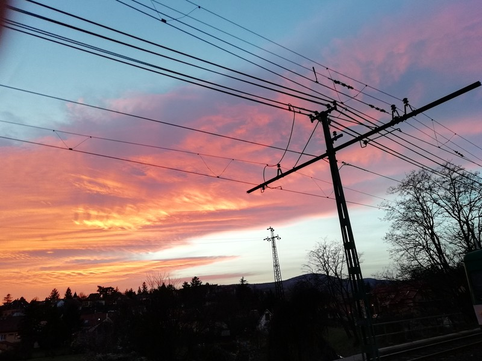

Point it at a folder of photos and it finds about three quarters of the look-alikes, and every group it makes is right.
It compares what pictures look like, not what they are called. You get one Excel report with a table for each group of look-alikes and the best copy already highlighted. The “about three quarters” was measured on one folder of the author's own photos, not promised for yours.
-

01 p01_orig.jpg -

02 p07_orig.jpg -
- 03 p05_orig.jpg
-

04 p05_resized.jpg -

05 p05_recompressed.jpg
-

06 p12_orig.jpg
Once it's set up (see Try it), run it on your own folder
find-duplicates photos/
The result
A folder of photos goes in. An Excel report comes out.
- One table per group of look-alikes.
- Each table lists the files in the group and how alike they are: Exact, Very Similar or Similar.
- The file to keep is highlighted: the one with the largest file size, then the larger resolution, then the first by name.
Nothing is deleted or moved. The report is advice, and you decide.
The alternative is sorting by hand: opening a folder, scrolling, and trusting your eyes and your file names. File names are the weak point, because a resized copy or a re-saved one rarely keeps a name that gives it away.
| File | Similarity |
|---|---|
| p05_identical.jpg | Very Similar |
| p05_orig.jpg | Very Similar |
| p05_recompressed.jpg | Very Similar |
| p05_resized.jpg | Very Similar |
How it works
- Frame 1 Read the folder (.jpg, .jpeg and .png; other formats such as .heic are skipped, with a warning that says how many).
- Frame 2 Work out what each photo looks like and compare every pair.
- Frame 3 Group the photos that look alike. Every photo in a group looks alike to every other photo in it.
- Frame 4 Write one table per group, with the file to keep highlighted.
How alike two photos must be is one setting, --threshold. The default is 8. Very large values lump unrelated photos together.
Proof
- A planted test set.
- The project builds a folder of photos plus, for each one, an identical copy, a copy resized smaller and a copy saved again at lower quality. On that set the tool found every planted group, and no group mixed unrelated photos. This is a test result for that set, not a promise for other folders.
- A test that goes red on purpose.
- Changing one setting on purpose made every photo land in a single group, and the benchmark test failed. Putting the setting back made it pass.
- A test of the tests.
- Small deliberate changes were made to the program's code, and the tests were run against each one. Almost every change was caught. The few that were not cannot change what the program does.
- One real folder.
- On one folder of the author's own photos, checked by hand, every group was correct and none was incomplete. Details are in the next section.
What it catches and what it misses
The real-folder run, on 2026-11-13 at the default threshold: of 414 pictures, the tool grouped 89 of them into 41 groups, all correct, and missed 30 pictures that had look-alikes (14 families: 2 triplets and 12 twins). This is one folder of one person's photos, not a promise for yours.
In words:
- It is safe to trust a group. In that run it never mixed unrelated photos and never split a family across groups.
- It does not find everything. About a quarter of the families were not grouped at all. The run did not record why, so this page does not claim a cause.
- It was not built for edited copies. Detecting rotated, cropped or heavily edited duplicates was left out of this term on purpose, so expect a mirrored, turned, bordered or cropped copy to be missed.
- Different shots of one scene are untested. A burst of separate shots of the same place was never tried, so the page makes no claim about it.
Try it
git clone https://github.com/esst-prog2/Photo-duplicate-finder.git
cd Photo-duplicate-finder
python -m venv .venv
.venv\Scripts\python -m pip install -e ".[dev]"
.venv\Scripts\find-duplicates C:\path\to\your\photosReplace C:\path\to\your\photos with a folder of your own. Running the tests is optional: .venv\Scripts\python -m pytest.
Tested with Python 3.11.15. The report is written next to the folder as duplicates_<date>_<time>.xlsx. If that exact name already exists, the tool asks before overwriting, and pressing Enter means no.
How it was built
- The spec lives under
openspec/. - Every decision is one line in
PLANNING_LOG.md, with who made the call. - Every step is one row in
PROCESS.md: what was done, what the tool did, and what I decided.